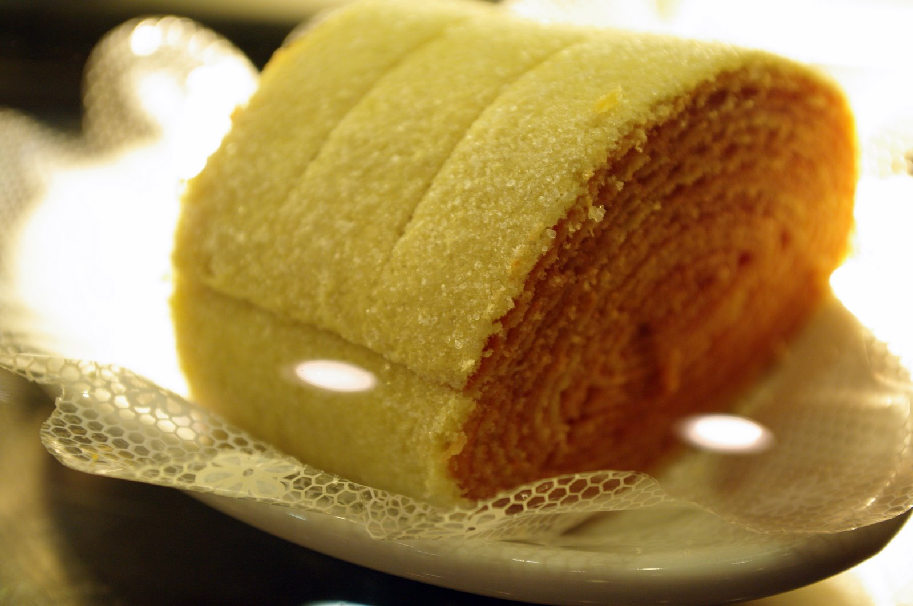

Bolo de Rolo

Bolo de Rolo is a traditional cake from Pernambuco, Brazil. It is a thin and rolled cake with layers of guava paste. It's a delicious and iconic dessert from the region.
Ingredients:
- 5 eggs
- 1 cup of sugar
- 1 cup of all-purpose flour
- 1 tablespoon of melted butter
- 300g of creamy guava paste
Instructions:
- Preheat the oven to 180°C (350°F).
- In a bowl, beat the eggs and sugar until you get a light and fluffy mixture.
- Add the sifted flour and mix gently.
- Add the melted butter and mix well until you have a homogeneous batter.
- Spread a thin layer of the batter onto a rectangular baking sheet lined with parchment paper.
- Bake in the oven for approximately 5 minutes or until the batter is lightly golden.
- Remove the baking sheet from the oven and carefully flip the baked layer onto a smooth surface covered with sugar.
- Spread the creamy guava paste over the baked layer and roll it into a roll cake.
- Repeat the process to create more layers of batter and guava paste until you run out of ingredients.
- Allow the cake to cool before serving.
- Slice into thin pieces and enjoy.
Homepage